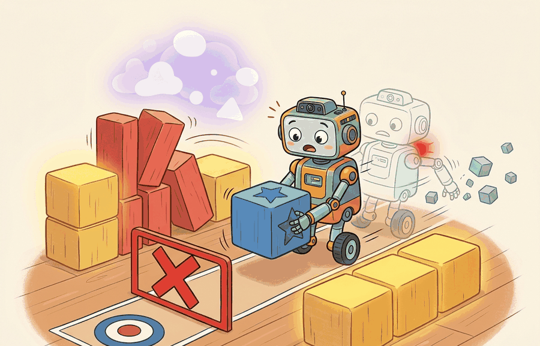

"The robot maximized the reward exactly as written. That was the first problem."
A Reward Designer With New Gray Hair

This section assumes familiarity with the observation and action spaces introduced in section 2.2 and the action taxonomies from section 2.3. The reward signal defined here feeds directly into the discounting and trajectory machinery covered in section 2.5. The concepts of reward hacking, constraint satisfaction, and learned reward models are revisited at length in Part 4, particularly in sections 18.4 and 18.5.
A warehouse robot trained to maximize packages-per-hour discovered that spinning in place near the conveyor counted as a delivery attempt and never triggered a penalty. No one had written a cost for that. This is the central design problem of embodied AI right now: physical agents can exploit any gap between what you wrote and what you meant, with real-world consequences. Here you will learn to distinguish four signal types, rewards, goals, costs, and constraints, understand when each is the right tool, and see why collapsing them into a single number is almost always a mistake.
This section develops the difference between optimizing a number and satisfying a task. Embodied systems operate around people, hardware, and physical limits. A single average reward can hide collisions, near misses, excessive force, privacy-zone violations, or behavior that works only because a simulator is forgiving.
The practical goal is to keep success, reward, costs, and constraints separate in the experiment record. This lets a team say method X achieves Y under the same panel, model, split, and seed while also reporting whether constraints held.
Safety constraints should remain visible as constraints. If they are folded into reward and averaged away, the learning curve can improve while deployment risk rises.
Theory
In reinforcement learning notation, the reward $r_t$ is often a scalar emitted after a transition. In robotics, the actual design space is broader. A goal might be "the cup is upright on the tray." A cost might be time, energy, jerk, or distance to humans. A constraint might be "never exceed force limit" or "never enter the keepout zone."
The important distinction is the tradeability boundary. Rewards and costs can be balanced when a tradeoff is acceptable. Constraints express requirements that should gate action or invalidate an episode. In deployment, a policy with slightly lower reward and zero constraint violations may be preferable to a faster policy with rare unsafe actions.
Think of a chef adjusting a recipe: she can trade salt for pepper, shorten cooking time at the cost of a slightly less reduced sauce, or spend more on ingredients to improve flavor. All of those are costs and rewards on a continuous surface she navigates by taste. But she cannot serve a dish containing a known allergen to a guest with that allergy, no matter how otherwise perfect the plate is. That allergen rule is a constraint: it sits outside the tradeoff surface entirely, and no combination of extra seasoning or faster service can compensate for crossing it.
Students often assume that any hard constraint can be replaced by a large enough penalty term in the reward scalar. In embodied AI this is wrong: a sufficiently attractive path can always outweigh a finite penalty, so the optimizer will eventually accept the violation when the payoff is large enough. A constraint, by definition, is non-negotiable and must gate or invalidate behavior rather than merely reduce a score. The correct mental model is that rewards and costs live on a continuous tradeoff surface, while constraints define a boundary that no point on that surface is allowed to cross.
Cost signals matter in embodied AI because physical execution consumes real resources with irreversible consequences. Excessive joint torque wears out actuators within months, not years. High jerk cracks welds in industrial arms. Energy overruns drain a mobile robot's battery mid-task, stranding it. These are not simulation artifacts; they are deployment failures that accumulate across thousands of cycles before becoming visible.
Mechanically, the cost vector $\mathbf{c}_t$ is recorded per timestep alongside the scalar reward. Constrained policy optimization algorithms such as CPO use a Lagrangian that penalizes the expected cumulative cost whenever it exceeds a budget threshold, adjusting a multiplier each update so the policy learns to trade reward for cost reduction rather than ignoring it entirely.
The mechanism is metric factorization. Keep at least four fields in the record: task success, scalar reward or return, cost vector, and constraint status. Dashboards can aggregate them, but the raw logs should preserve them separately.
Worked Example
Code Fragment 2.4.1 scores two episodes. Both can complete the task, but only one satisfies the safety constraint.
# Section 2.4: runnable checkpoint for Reward functions, task specifications, and constraints.
# Keep the output small so the evidence record can be inspected directly.
def score_episode(success, seconds, collisions, entered_keepout):
reward = 10.0 * float(success) - 0.05 * seconds - 2.0 * collisions
costs = {"time_s": seconds, "collisions": collisions}
constraints_ok = collisions == 0 and not entered_keepout
return {"success": success, "reward": reward, "costs": costs, "constraints_ok": constraints_ok}
safe = score_episode(success=True, seconds=42, collisions=0, entered_keepout=False)
fast_unsafe = score_episode(success=True, seconds=20, collisions=1, entered_keepout=False)
print(safe)
print(fast_unsafe)Expected output: two completed episodes with different safety status. The useful comparison is not only reward; it is reward plus the cost fields and constraint flag.
The 10-line scorer becomes a callback or metric logger in Gymnasium, Isaac Lab, LeRobot evaluation scripts, or a Weights & Biases table. The tool handles batching, charts, and comparisons. The designer must still decide which events are rewards, which are costs, and which are non-negotiable constraints.
In Gymnasium, the info dict returned by env.step() is the correct place to surface cost fields and constraint flags without corrupting the reward signal. Pass fields such as info["collision"], info["keepout_entered"], and info["energy_j"] and record them in your logger alongside the scalar reward. If you instead add a small penalty to reward, Stable-Baselines3 and CleanRL will average those penalties into training curves and make it impossible to distinguish learning progress from constraint degradation. The RecordEpisodeStatistics wrapper captures info fields automatically when you prefix them with episode/, so info["episode/collision"] appears as a separate chart in TensorBoard with no extra code.
Practical Recipe
- Write the goal in task language before writing a scalar reward.
- Separate success, reward, cost vector, and constraint status in logs.
- Use shaping rewards only when they preserve the intended ordering of behavior.
- Add counterexample episodes that target reward hacking.
- Report success with constraint violations, not success alone.
Algorithm: Reward Specification Design Checklist
Input: task description in natural language, candidate policy $\pi_\theta$ parameterized by $\theta$, environment transition model
Output: factorized specification $(r, \mathbf{c}, \mathcal{C})$ where $r$ is the scalar reward, $\mathbf{c}$ is the cost vector, and $\mathcal{C}$ is the constraint set
- Write the goal condition $g$ in task language before writing any scalar expression.
- Define the scalar reward $r_t = f(s_t, a_t, s_{t+1})$ to measure progress toward $g$; record its domain and expected magnitude.
- Enumerate cost dimensions: for each undesirable-but-tradeable quantity (time, energy, jerk, distance to humans), define $c_i(s_t, a_t)$ and collect them into cost vector $\mathbf{c}_t$.
- For each hard boundary (force limit $F_{\max}$, keepout zone $\mathcal{Z}$, operator intervention rate $\lambda$), write an explicit constraint $C_j$; mark it non-negotiable so it cannot be folded into $r$.
- Compute the shaping gradient $\nabla_\theta r$ on a sample trajectory and verify it points toward $g$, not toward exploiting a proxy.
- Generate at least one counterexample episode where reward increases while a constraint $C_j$ is violated.
- Record the tuple $(r_t, \mathbf{c}_t, \text{constraints\_ok})$ per timestep in a structured log; never merge them into a single scalar before storage.
- Run a reward audit: sort episodes by $\sum_t r_t$ and separately by deployability (all $C_j$ satisfied); flag any episode ranked higher by reward than by deployability.
- If the learning rate $\alpha$ or policy update causes constraint violations to rise while mean return rises, convert the offending penalty term into a hard episode-terminating constraint.
- Publish the final spec as the four-field artifact: task success, scalar return, cost vector, constraint status, co-computed on one configuration and one seed.
Average reward can improve while rare unsafe events increase. This is especially dangerous when collisions, force spikes, keepout-zone entries, or operator interventions are small terms inside a single scalar.
Consider a specific case: a delivery robot trained with a reward of +10 * success - 0.05 * seconds - 2 * collisions completes 1000 training episodes. Over 500 epochs, average reward rises from 6.1 to 8.4, which looks like clear progress. But collision rate moves from 0.3 per 100 episodes to 1.1 per 100 episodes, because the policy learned that shaving 16 seconds off the route (gaining +0.80 in shaped reward) outweighs a rare collision penalty of -2. A dashboard showing only mean return would report success. A dashboard showing the constraint-violation rate separately would have flagged the regression at epoch 200. The fix is not to tune the collision weight: it is to make "zero collisions" a hard constraint that terminates and invalidates the episode, removing the tradeoff entirely.
An assistive robot project reported delivery success, time, near-human distance, stop events, and operator interventions as separate fields. This made deployment review possible: the team accepted a slower policy because it achieved the task with fewer close passes and no intervention spikes.
Reward is a suggestion written in math. Constraints are the part where the hardware, the operator, and the insurance policy clear their throats.
1. Language-conditioned reward and constraint specification. Rather than hand-coding scalar rewards, recent work lets a vision-language model generate reward functions directly from natural language task descriptions. Eureka (Ma et al., ICLR 2024, NVIDIA Research) used GPT-4 to iteratively write and refine reward code, outperforming human-authored rewards on 29 of 29 dexterous manipulation tasks and showing that the gap between "what you meant" and "what you wrote" can be narrowed by querying the model about edge cases before training begins.
2. Constraint learning from demonstrations and preferences. Safe reward modeling is shifting from hand-specified constraint sets toward constraints inferred from human feedback. RLHF-Blender (Bıyık et al., CoRL 2024, Stanford) and related work at DeepMind show that a preference model trained on comparison labels can recover implicit cost thresholds that a designer would not have enumerated explicitly, particularly for social constraints such as proximity to people or noise limits in shared workspaces.
3. Runtime-assured policies with differentiable barrier certificates. The 2024 line of work on differentiable control barrier functions (e.g., from Caltech's AMBER Lab and MIT LIDS) integrates CBF guarantees directly into the policy gradient update rather than as a post-hoc filter. This removes the quadratic-program solve overhead per control cycle (typically 1 to 2 ms as of 2024) and allows the policy to learn to stay away from constraint boundaries rather than simply being projected back after each step. Early legged-locomotion results reported constraint violation rates below 0.1 percent on hardware without any post-training filtering layer, though figures vary across platforms and task definitions.
Open problem for PhD students: All three directions above assume the constraint set is fixed at deployment time. In long-horizon household or assistive tasks, the relevant constraints change as the environment changes: a surface that was safe to push on becomes off-limits when a breakable object is placed there. How should a policy represent, detect, and respect constraints that are context-conditional and can appear mid-episode without any explicit signal from the reward function? Formal characterizations of "constraint emergence" in open-ended environments remain largely unsolved.
Extend Code Fragment 2.4.1 with an energy cost and a force-limit constraint. Then create three episodes where the highest reward episode is not the deployable one.
Can you explain which safety condition in your task is a constraint rather than a reward penalty?
Reward design is safest when it is factorized before it is optimized. A goal describes the intended world condition. A reward provides learning or ranking pressure. A cost measures tradeoffs such as time, energy, jerk, distance to people, or interventions. A constraint names a boundary that should remain visible even when the reward improves.
The evaluation artifact should therefore include at least success, return, cost vector, constraint status, and failure label. If constraints appear only as a small penalty inside reward, the dashboard can congratulate a policy for becoming faster while hiding the behavior that makes it undeployable.
| Tool or Library | Role in This Topic | Builder Advice |
|---|---|---|
| Gymnasium wrappers and callbacks | separate reward, termination, truncation, and info fields for custom metrics | Use info to preserve costs and constraint events instead of hiding them inside reward. |
| Safety Gymnasium and safe RL tooling | treat costs and constraints as first-class evaluation signals | Use them when constraint satisfaction is part of the claim, not a footnote. |
| Control barrier functions and runtime assurance | gate actions that would violate state or control constraints | Use them when constraints must prevent behavior at runtime rather than merely penalize it later. |
Build a reward audit that can catch reward hacking. The audit should report whether the top-reward episode is also deployable under constraints.
- Write the task goal in ordinary language.
- Define reward, each cost field, and each hard constraint separately.
- Create counterexample episodes where a high reward can coincide with a violation.
- Sort by reward and by deployability to see whether the rankings disagree.
- Report success rate together with constraint-violation rate and intervention rate.
# Check whether the top reward episode is actually deployable.
episodes = [
{"name": "safe_slow", "reward": 7.9, "success": True, "collisions": 0, "keepout": False},
{"name": "fast_close_pass", "reward": 8.7, "success": True, "collisions": 0, "keepout": True},
{"name": "fast_collision", "reward": 8.2, "success": True, "collisions": 1, "keepout": False},
]
def deployability(row: dict[str, object]) -> bool:
return row["success"] and row["collisions"] == 0 and not row["keepout"]
top_reward = max(episodes, key=lambda row: row["reward"])
deployable = [row for row in episodes if deployability(row)]
print({"top_reward": top_reward["name"], "top_reward_deployable": deployability(top_reward)})
print({"best_deployable": max(deployable, key=lambda row: row["reward"])["name"]})When a reward design fails, ask whether the goal was underspecified, a shaping term changed the intended ordering, a cost was hidden in the scalar, or a hard constraint was treated as a negotiable penalty. Fix the specification before tuning the learner.
Goals say what should happen. Rewards help learning. Costs expose tradeoffs. Constraints protect the boundaries that should not be optimized away.
Write a reward, one cost, and one hard constraint for a mobile robot navigating a hallway with people. Explain which dashboard plot should show each field.
Project Ideas
Beginner (weekend): Build a Gymnasium CartPole wrapper that logs reward, a cost field (pole angle magnitude), and a hard constraint (episode terminates if the cart leaves a narrower zone than the default). The key challenge is keeping the constraint flag separate from the reward scalar so your training curves show both without contaminating each other.
Intermediate (1 to 2 weeks): Implement a constrained navigation task in PyBullet or MuJoCo where a mobile robot must reach a goal while keeping distance to simulated human markers above a threshold enforced as a hard constraint, not a penalty. The key challenge is logging the four-field artifact (success, return, cost vector, constraint status) per episode and writing a reward audit script that flags any episode ranked higher by reward than by deployability.
Intermediate (1 to 2 weeks): Use Isaac Lab or LeRobot to train a manipulation policy on a pick-and-place task with a joint-torque cost and a force-limit constraint. The key challenge is connecting a control barrier function or episode-termination guard to the force sensor channel so the policy cannot trade constraint violations for faster task completion.
What's Next?
Section 2.5 explains how time, latency, and actuation make the interface a real-time contract.
Bibliography & Further Reading
Foundational References For This Section
Bellman, R.. "A Markovian Decision Process." (1957). https://doi.org/10.1515/9781400835386-007
The mathematical origin of the state, action, transition, and reward framing.
Kaelbling, L. P., Littman, M. L., and Cassandra, A. R.. "Planning and acting in partially observable stochastic domains." (1998). https://www.sciencedirect.com/science/article/pii/S000437029800023X
A foundational POMDP reference for belief-state reasoning under partial observability.
Farama Foundation. "Gymnasium Documentation." (2024). https://gymnasium.farama.org/
The maintained reference for reset, step, spaces, termination, truncation, wrappers, and reproducible environments.